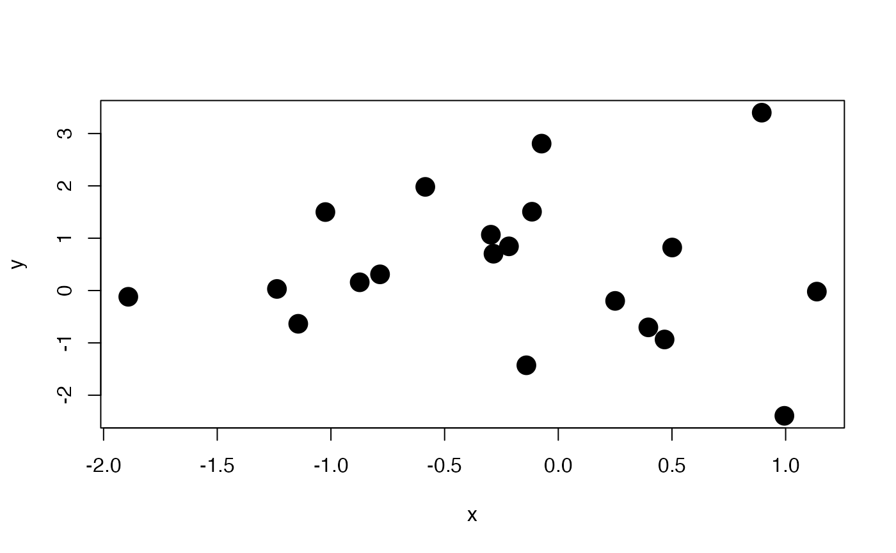

These two functions use recordPlot and replayPlot
to record image frames and replay the animation respectively.
Replay the animation
Arguments
- reset
if
TRUE, the recording list will be cleared, otherwise new plots will be appended to the existing list of recorded plots- replay.cur
whether to replay the current plot (we can set both
resetandreplay.curtoTRUEso that low-level plotting changes can be captured by off-screen graphics devices without storing all the plots in memory; see Note)- list
a list of recorded plots; if missing, the recorded plots by
ani.recordwill be used
Details
One difficulty in capturing images in R (base graphics) is that the
off-screen graphics devices cannot capture low-level plotting commands as
new image files -- only high-level plotting commands can produce new
image files; ani.record uses recordPlot to record
the plots when any changes are made on the current plot. For a graphical
device to be recordable, you have to call dev.control('enable') before
plotting.
ani.replay can replay the recorded plots as an
animation. Moreover, we can convert the recorded plots to other formats
too, e.g. use saveHTML and friends.
The recorded plots are stored as a list in .ani.env$.images, which
is the default value to be passed to ani.replay;
.ani.env is an invisible environment created when this
package is loaded, and it will be used to store some commonly used objects
such as animation options (ani.options).
Note
Although we can record changes made by low-level plotting commands
using ani.record, there is a price to pay -- we need memory
to store the recorded plots, which are usually verg large when the plots
are complicated (e.g. we draw millions of points or polygons in a single
plot). However, we can set replay.cur to force R to produce a new
copy of the current plot, which will be automatically recorded by
off-screen grapihcs devices as new image files. This method has a
limitation: we must open a screen device to assist R to record the plots.
See the last example below. We must be very careful that no other graphics
devices are opened before we use this function.
If we use base graphics, we should bear in mind that the background colors
of the plots might be transparent, which could lead to problems in HTML
animation pages when we use the png device (see the examples
below).
References
Examples at https://yihui.org/animation/example/ani-record/
Examples
library(animation)
n = 20
x = sort(rnorm(n))
y = rnorm(n)
## set up an empty frame, then add points one by one
par(bg = "white") # ensure the background color is white
plot(x, y, type = "n")
ani.record(reset = TRUE) # clear history before recording
for (i in 1:n) {
points(x[i], y[i], pch = 19, cex = 2)
ani.record() # record the current frame
}

## now we can replay it, with an appropriate pause between frames
oopts = ani.options(interval = 0.5)
ani.replay()
## or export the animation to an HTML page
saveHTML(ani.replay(), img.name = "record_plot")
#> animation option 'nmax' changed: 50 --> 20
#> animation option 'nmax' changed: 20 --> 50
#> HTML file created at: index.html
## record plots and replay immediately
saveHTML({
dev.control("enable") # enable recording
par(bg = "white") # ensure the background color is white
plot(x, y, type = "n")
for (i in 1:n) {
points(x[i], y[i], pch = 19, cex = 2)
ani.record(reset = TRUE, replay.cur = TRUE) # record the current frame
}
})
#> animation option 'nmax' changed: 50 --> 21
#> animation option 'nmax' changed: 21 --> 50
#> HTML file created at: index.html
ani.options(oopts)